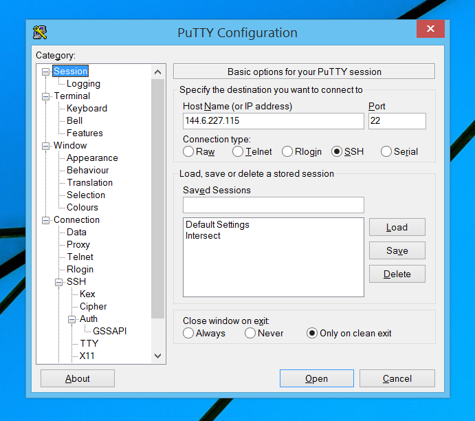
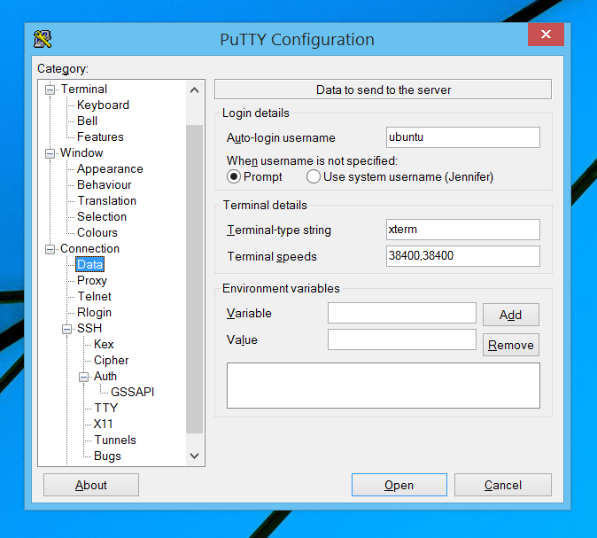
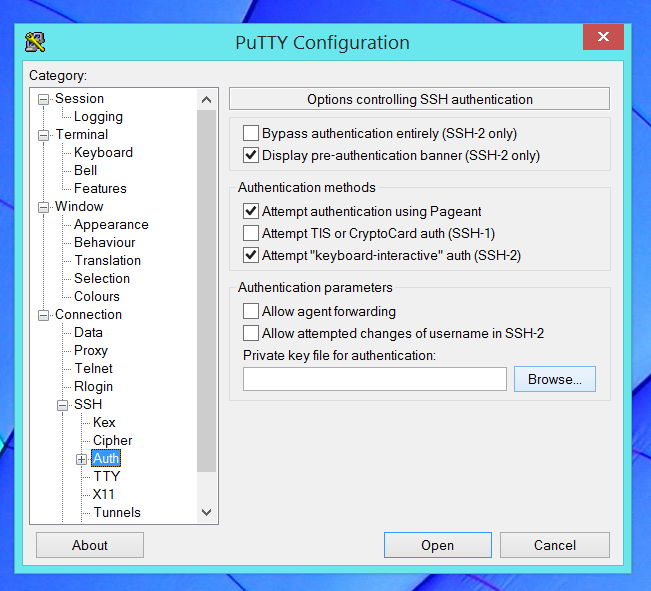
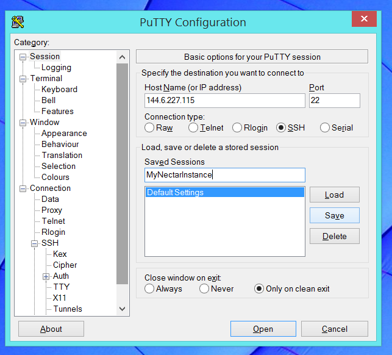

Module 7
Launching and Connecting
Sections of this module:
IntroductionCreate a ssh key
Launching an instance
Connect to the instance
Configuration and control
Connect to a remote desktop
Graphical Interfaces on the ssh terminal
Install a web server
Managing storage
Summary
Appendix
View all sections on one page (Printer friendly)
Connect to the instance
To connect to your instance, you will need its IP address. You should have just written this down, or you can look it up on the Dashboard (Compute > Instances).
In the following text, your IP address is described as NNN.NNN.NNN.NNN, which you will have to replace with your own instance’s IP address.
To get a secure connection, we need to log on to the instance via ssh.
Connect via ssh
Step 1: Test connectivity
First, let’s do a little test to see if your instance is reachable. On Linux/Mac, you can use the command line shell that you have just opened.
On Windows, open your Windows command line.
Use the terminal to try to “ping” your instance (checking that you can reach it):
ping NNN.NNN.NNN.NNN
replacing the N’s with the IP address of your NeCTAR instance you noted above.
The ping command just sends a simple signal to your instance and checks whether it responds. If the ping does not work, then most likely neither will any of the following steps. The ping has worked if you get a response every few seconds, e.g.
PING 144.6.227.170 (144.6.227.170) 56(84) bytes of data. 64 bytes from 144.6.227.170: icmp_seq=1 ttl=49 time=354 ms 64 bytes from 144.6.227.170: icmp_seq=2 ttl=49 time=358 ms
Step 2: Logging in
We will now log in to our instance using ssh with the private key (the username might be different depending on the image you launched).
Follow the instructions below for the operating system of your local computer.
Note: If the ping has worked but the SSH connection does not work after following instructions below, follow the troubleshooting steps in the Appendix.
Linux/Mac
We will need a command line shell (a “Terminal”) in this exercise. On Linux and Mac, you have a built-in terminal. Open it now (if you are unsure how, refer to the notes in the introduction).
Go to your command line and type
ssh -i Nectar_Key ubuntu@NNN.NNN.NNN.NNN
using your own IP address instead of NNN.NNN.NNN.NNN. The command line will ask you to establish the authenticity of the server. Type “yes”.
You will then be asked for your passphrase (that’s the one you chose when generating the SSH Key).
Note: If you named your key other than Nectar_Key, you should replace this with your own private key file name here. If you saved the private key in another folder, you will have to specify the full path to it (e.g. ssh -i /home/john/yourkeyfolder/Nectar_Key NNN.NNN.NNN.NNN).
On a Mac:
You may have to specify the full path to the key. If the above does not work, try instead:
ssh -i $HOME/.ssh/Nectar_Key ubuntu@NNN.NNN.NNN.NNN

Our instance has a default username that we need to specify when we log in. In this tutorial, we chose a Ubuntu Image when launching the instance. At the time of writing, the user name for Ubuntu is “ubuntu”. Other NeCTAR images may expect different usernames.
Try using root instead of ubuntu (“root@NNN.NNN.NNN.NNN”) for other Operating Systems. For Fedora, the user name may be ec2-user. The right user name for the image you chose is documented in the NeCTAR Image_Catalog.
Well done!
Now, you should be connected to your instance and your ssh terminal command line is ready to use.
Windows
On a windows system, we will use the PuTTY terminal to connect to the instance. We first have to set up our PuTTY session to include the details of our instance, including the keys we are using.
Double-click on the file “PuTTY.exe” which you downloaded when you created the SSH key.
In your PuTTY Window, type your instance’s IP address into the “Host” field (you should have taken a note about the IP address earlier, if not you can find it on the Dashboard: Go to Compute > Instances).

Then, select the “Data” category in the navigation window. Here, we will have to specify the username. Choose “ubuntu” as your username. Leave the other fields on default settings.

Our instance has a default username that we need to specify when we log in. In this tutorial, we chose a Ubuntu Image when launching the instance. At the time of writing, the user name for Ubuntu is “ubuntu”. Other NeCTAR images may expect different usernames.
Try using root instead of ubuntu for other Operating Systems. For Fedora, the user name may be ec2-user. The right user name for the image you chose is documented at the NeCTAR Image_Catalog.
Next, click on the “SSH > Auth” sub-category. There is a field labelled “Private key file for authentication”. Click on the “Browse” button:

In the browse window that comes up, select the private SSH key file that you saved on your computer earlier (we named it Nectar_Key)
Note: If you have generated your ssh key on a Linux system and now need to convert it to Windows, see how to do this in the Appendix.
Instead of converting keys, you can also simply create a separate set of keys to use with PuTTY. In this case, you have to add the new key as an authorized key on the instance. See the Appendix for instructions on how to do this.
Now, return to the “Session” screen in the left navigation window. This is the screen we started at. We will save our settings (the “session”), so that in future we don’t need to type in all the details again. In the “Saved Sessions” section, choose any name for this session so that you can remember it, for example “MyNeCTARInstance”. Then, click on the “Save” button.

Now, connect to the instance by clicking the “Open” button. The first time that you connect, you will be asked to verify the identity of the remote server. This is expected the first time you connect to a new server, so you can select “Yes” to continue. You will be prompted for a passphrase. Type in the passphrase that you used to create the SSH key earlier on.
Every time you connect to the instance via Putty, you will have to type in your passphrase. This may get a little cumbersome, so note that there is a tool called Pageant that you can get on the same page where you downloaded PuTTY. Pageant is an SSH authentication agent. It holds your private keys in memory, already decoded, so that you can use them often without needing to type the passphrase every time. It also eliminates the need to explicitly specify the relevant key to each user account, if you use more than one account to log into a server.
We will not use pageant in this tutorial, but you may be interested to read up on how to use it. You can find instruction in the Appendix.
Well done!
Now, a black Terminal window should open and your command line is ready to use.

 This work is licensed under a
This work is licensed under a